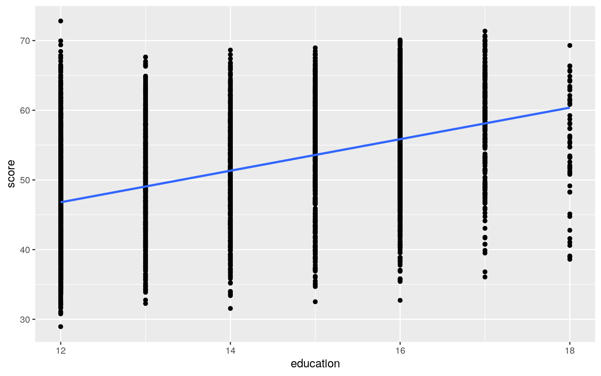
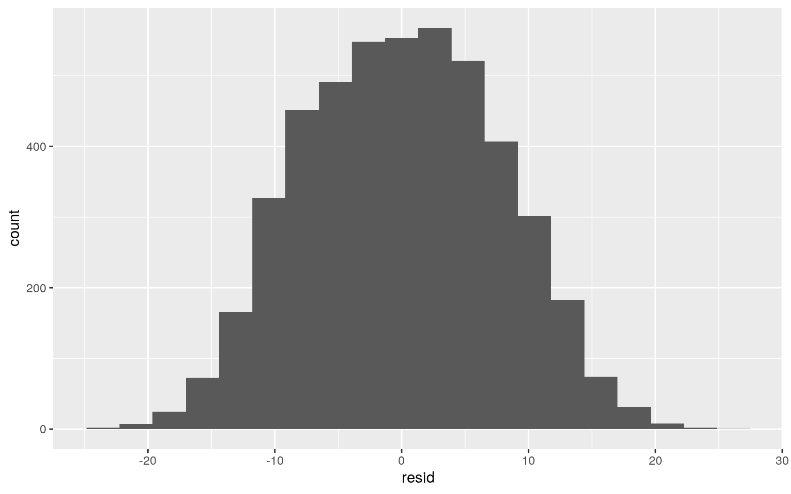

This dataset includes the results of a cross-sectional study, from High School and Beyond, which was conducted in 1980 and then once again followed up in 1986. This dataset includes survey results from students from approximately 1,100 high schools. This dataset consists of several variables, both categorical and numerical. The categorical variables include gender, ethnicity, fcollege, mcollege, home, urban, income and region. The numerical variables in this dataset include score, umep, wage, distance, tuition, and education. When it comes to what each of these variables represent gender jsut indicates the gender. Ethnicity indicaates the ethnicity of the individual (either African American, Hispanic or other). Score indicates the base year composite score on the achievement tests givne to high school seniors in this sample. Fcollege indicates whether or not the father is a college graduate. Mcollege indicates whether or not the mother is a college graduate. Home indicates if the family owns their own home. Urban indicates is the school is in an urban area. Unemp indicates the county unemployment rate in 1980. Wage indicates the state hourly wage in manufacturing in 1980. Distance indicates the distance from 4 year colleges (in 10 miles). Tuition indicates the average state 4-year tuition (in 1000 USD). Education indicates the number of years of education. Income indicates whether or not the family's income is above $25,000. Finally, region indicates the region (West or other). I chose this dataset becuase I thought it would be interesting to look at all of the factors that affect the scores on achievement exams for this particular group of high school seniors.
library(lmtest)
library(sandwich)
library(plotROC)
library(tidyverse)
library(MASS)
library(glmnet)
library(ggplot2)
#Importing Dataset
CollegeDistance <- read_csv("CollegeDistance.csv")
#MANOVA
manova <- manova(cbind(education, score, wage)~gender, data=CollegeDistance)
summary(manova)## Df Pillai approx F num Df den Df Pr(>F)
## gender 1 0.0076805 12.216 3 4735 5.837e-08 ***
## Residuals 4737
## ---
## Signif. codes: 0 '***' 0.001 '**' 0.01 '*' 0.05 '.' 0.1
' ' 1A manova test was conducted to determine the effect of gender on the number of years of education, base year composite test scores, and the state hourly wage in manufacturing 1980. The results of the manova test indicate that significant differences were found among each of variables at each site.
#Univariate ANOVA
summary.aov(manova)## Response education :
## Df Sum Sq Mean Sq F value Pr(>F)
## gender 1 1.4 1.4457 0.4516 0.5016
## Residuals 4737 15164.4 3.2013
##
## Response score :
## Df Sum Sq Mean Sq F value Pr(>F)
## gender 1 2306 2305.89 30.642 3.27e-08 ***
## Residuals 4737 356471 75.25
## ---
## Signif. codes: 0 '***' 0.001 '**' 0.01 '*' 0.05 '.' 0.1
' ' 1
##
## Response wage :
## Df Sum Sq Mean Sq F value Pr(>F)
## gender 1 6.3 6.3282 3.5101 0.06106 .
## Residuals 4737 8540.2 1.8029
## ---
## Signif. codes: 0 '***' 0.001 '**' 0.01 '*' 0.05 '.' 0.1
' ' 1The ANOVA test for each dependent variable was conducted as a follow-up to the MANOVA test that was previously conducted. The univariate ANOVA for score was significantly different by gender. But the ones for wage and education were not significantly different by gender.
#Post-Hoc T-Test
pairwise.t.test(CollegeDistance$education, CollegeDistance$gender, p.adj="none")##
## Pairwise comparisons using t tests with pooled SD
##
## data: CollegeDistance$education and
CollegeDistance$gender
##
## female
## male 0.5
##
## P value adjustment method: nonepairwise.t.test(CollegeDistance$score, CollegeDistance$gender, p.adj="none")##
## Pairwise comparisons using t tests with pooled SD
##
## data: CollegeDistance$score and CollegeDistance$gender
##
## female
## male 3.3e-08
##
## P value adjustment method: nonepairwise.t.test(CollegeDistance$wage, CollegeDistance$gender, p.adj= "none")##
## Pairwise comparisons using t tests with pooled SD
##
## data: CollegeDistance$wage and CollegeDistance$gender
##
## female
## male 0.061
##
## P value adjustment method: noneA post-hoc analysis was carried out by conducting pairwise comparisons to determine which gender differed in each variable that was tested. In this case, all of the p-values were greater than 0.05, except for the comparison of gender and score. This means that males significantly differ from females in the score variable but they do not significantly differ from females in the education and wage variables.
#Probablilty of at Least One Type-1 Error
1-(1-0.05)^7## [1] 0.3016627Since I ran 7 different hypotheses, the probability of a Type 1 error occuring was 0.3016627.
#Bonferroni Adjusted Correction
0.05/7## [1] 0.007142857To Bonferroni Correction was used to keep the Type-1 error at 0.05. The adjusted signifiance level is approximately 0.007142857.
#Adjusted Post-Hoc T-tests with Bonferroni Correction
pairwise.t.test(CollegeDistance$education, CollegeDistance$gender, p.adj="bonf")##
## Pairwise comparisons using t tests with pooled SD
##
## data: CollegeDistance$education and
CollegeDistance$gender
##
## female
## male 0.5
##
## P value adjustment method: bonferronipairwise.t.test(CollegeDistance$score, CollegeDistance$gender, p.adj="bonf")##
## Pairwise comparisons using t tests with pooled SD
##
## data: CollegeDistance$score and CollegeDistance$gender
##
## female
## male 3.3e-08
##
## P value adjustment method: bonferronipairwise.t.test(CollegeDistance$wage, CollegeDistance$gender, p.adj="bonf")##
## Pairwise comparisons using t tests with pooled SD
##
## data: CollegeDistance$wage and CollegeDistance$gender
##
## female
## male 0.061
##
## P value adjustment method: bonferroniAfter adjusting for the significance level using the bonferroni correction, the mean difference between males and females remain the same for each of the variables as before.
This means that the assumptions for the ANOVA test (independent observations, random sample, equal variance, etc.) were all met and the assumptions for the MANOVA test were most likley not met. A primary reason for this is because the MANOVA has a lot more assumptions including homogeneity, no extreme outliers, multivariate normality, no multicollinearity, among others. This makes it nearly impossible to find a dataset that fits all of these assumptions.
#Null and ALternative Hypothesis Null (Ho): The mean score is the same for male vs. female high school seniors in this sample. Alternative (Ha): The mean score is different for male and female high school seniors in this sample.
#Randomization Test (Mean Difference)
#Test Statistic
mean_diff <-mean(CollegeDistance[CollegeDistance$gender=="Male",]$score)~mean(CollegeDistance[CollegeDistance$gender=="Female",]$score)
#Permutation Loop
rand_dist<-vector()
for(i in 1:5000){
new<-data.frame(score=sample(CollegeDistance$score),gender=CollegeDistance$gender)
rand_dist[i]<-mean(new[new$gender=="Male",]$score)-
mean(new[new$gender=="Female",]$score)}
#Independent T-Test
t.test(data=CollegeDistance, score~gender)##
## Welch Two Sample t-test
##
## data: score by gender
## t = -5.5096, df = 4472.2, p-value = 3.798e-08
## alternative hypothesis: true difference in means is not
equal to 0
## 95 percent confidence interval:
## -1.9005360 -0.9029613
## sample estimates:
## mean in group female mean in group male
## 50.25633 51.65808The p-value for the t-test that was performed came out to be approximately 3.798e-08. Since this value is below alpha (0.05), we can reject the null hypothesis. This leads to the conclusoin that the mean score is significantly different for both male and female high school students in the sample that is represented in the dataset.
#Plot Visualization of Null Distribution and Test Statistic 3. (35 pts) Build a linear regression model predicting one of your response variables from at least 2 other variables, including their interaction. Mean-center any numeric variables involved in the interaction.
ggplot() using geom_smooth(method="lm"). If your interaction is numeric by numeric, refer to code in the slides to make the plot or check out the interactions package, which makes this easier. If you have 3 or more predictors, just chose two of them to plot for convenience. (8)coeftest(..., vcov=vcovHC(...)). Discuss significance of results, including any changes from before/after robust SEs if applicable. (8)#Mean-Centering Numeric Variable
CollegeDistance_c <- CollegeDistance
CollegeDistance_c$education <- CollegeDistance_c$education - mean(CollegeDistance_c$education, na.rm = T)
#Linear Regression with Interaction
fit1 <-lm(score ~ gender * education, data = CollegeDistance)
summary(fit1)##
## Call:
## lm(formula = score ~ gender * education, data =
CollegeDistance)
##
## Residuals:
## Min 1Q Median 3Q Max
## -23.461 -5.832 -0.035 5.599 26.266
##
## Coefficients:
## Estimate Std. Error t value Pr(>|t|)
## (Intercept) 21.68668 1.17604 18.440 < 2e-16 ***
## gendermale -4.33496 1.74073 -2.490 0.01280 *
## education 2.07148 0.08457 24.494 < 2e-16 ***
## gendermale:education 0.40963 0.12499 3.277 0.00106 **
## ---
## Signif. codes: 0 '***' 0.001 '**' 0.01 '*' 0.05 '.' 0.1
' ' 1
##
## Residual standard error: 7.669 on 4735 degrees of
freedom
## Multiple R-squared: 0.2239, Adjusted R-squared: 0.2234
## F-statistic: 455.3 on 3 and 4735 DF, p-value: < 2.2e-16When there is no interaction between gender and education, the intercept estimate of 21.68668 is the average composite score. The coefficient estimate of -4.33496 is how much the average score decreases when the gender is male. The coefficient estimate of 2.07148 is how much the average score increases with the increase in every year of education. The coefficient of gendermale:education is how much average score will increases if the gender was male and the education increases (0.40963).
#Plotting Regression
ggplot(CollegeDistance, aes(x=education, y=score, group=gender))+geom_point(aes(color=gender))+
geom_smooth(method="lm",se=F,fullrange=T,aes(color=gender))+theme(legend.position=c(.9,.19)) + ggtitle("Interaction between Gender and Years of Education on Composite Score") + xlab("Education (# of Years)")#Checking Assumptions
resid <-fit1$residuals
fitvalue <- fit1$fitted.values
#Linearity
ggplot(CollegeDistance, aes(x=education, y=score)) + geom_point() + geom_smooth(method = "lm", se=F)
#Homoskedasticity From Graph
ggplot()+geom_point(aes(fitvalue,resid))+geom_hline(yintercept=0, color='red')#Homoskedasticity Breuch-Pagan Test
bptest(fit1)##
## studentized Breusch-Pagan test
##
## data: fit1
## BP = 25.759, df = 3, p-value = 1.071e-05#Normality From The Graph
ggplot()+geom_histogram(aes(resid), bins=20)
ggplot()+geom_qq(aes(sample=resid))+geom_qq_line()#Shapiro-Wilk Test Normality
shapiro.test(resid)##
## Shapiro-Wilk normality test
##
## data: resid
## W = 0.99527, p-value = 2.789e-11The numeric variable (education) seems to have somewhat of a linear relationship with score according to the graph. According to the Breusch-Pagan Test that was conducted, the null hypothesis of homoskedasticity was rejected since the p-value is significant. Also according to the Shapiro-Wilk Test, the null hypothesis of normality was also rejected, since the test was significant. With that being said, the assumptions for linearity is somewhat met, but the assumptions for homoskedasticity and the assumptions for normality were not met.
#Heteroskedasticity Robust Standard Errors
coeftest(fit1, vcov = vcovHC(fit1))##
## t test of coefficients:
##
## Estimate Std. Error t value Pr(>|t|)
## (Intercept) 21.686681 1.194994 18.1479 < 2.2e-16 ***
## gendermale -4.334960 1.765182 -2.4558 0.014092 *
## education 2.071477 0.085623 24.1931 < 2.2e-16 ***
## gendermale:education 0.409633 0.125425 3.2659 0.001099
**
## ---
## Signif. codes: 0 '***' 0.001 '**' 0.01 '*' 0.05 '.' 0.1
' ' 1Since my data did not meet the homoskedasticity assumption, we redid the regression with heteroskedasticity robust standard errors. The t-values did seem to change slightly. The results of the education variable, without interaction, became more significant. Most of the rest of the data stayed the same.
#Proportion of Variation Explained by Model
summary(fit1)##
## Call:
## lm(formula = score ~ gender * education, data =
CollegeDistance)
##
## Residuals:
## Min 1Q Median 3Q Max
## -23.461 -5.832 -0.035 5.599 26.266
##
## Coefficients:
## Estimate Std. Error t value Pr(>|t|)
## (Intercept) 21.68668 1.17604 18.440 < 2e-16 ***
## gendermale -4.33496 1.74073 -2.490 0.01280 *
## education 2.07148 0.08457 24.494 < 2e-16 ***
## gendermale:education 0.40963 0.12499 3.277 0.00106 **
## ---
## Signif. codes: 0 '***' 0.001 '**' 0.01 '*' 0.05 '.' 0.1
' ' 1
##
## Residual standard error: 7.669 on 4735 degrees of
freedom
## Multiple R-squared: 0.2239, Adjusted R-squared: 0.2234
## F-statistic: 455.3 on 3 and 4735 DF, p-value: < 2.2e-16When looking at the R squared indicator, the proportion of variation in score that is explained by the model is approximately 0.2239. The adjusted R squared valye of 0.2234 is not that different. This is a more conservative value that looks at the proportion of variation in score that is explained by the model.
#Bootstrapped SE
samp_dist<-replicate(5000, {
boot_dat<-boot_dat<-CollegeDistance_c[sample(nrow(CollegeDistance_c),replace=TRUE),]
fit2<-lm(score ~ gender * education, data=boot_dat)
coef(fit2)
})
samp_dist%>%t%>%as.data.frame%>%summarize_all(sd)## (Intercept) gendermale education gendermale:education
## 1 0.1512662 0.2232947 0.08484991 0.125519#Bootstrapped SE (Residual Resampling)
fit3<-lm(score ~ gender * education, data=CollegeDistance_c)
resids <-fit3$residuals
fitted <- fit3$fitted.values
resid_resamp<-replicate(5000,{
new_resids<-sample(resids,replace=TRUE)
CollegeDistance_c$new_y<-fitted+new_resids
fit3<-lm(new_y ~ gender * education, data=CollegeDistance_c)
coef(fit3)
})
resid_resamp%>%t%>%as.data.frame%>%summarize_all(sd)## (Intercept) gendermale education gendermale:education
## 1 0.1488794 0.221047 0.08407657 0.1245731The model was run again with the bootstrapped standard errors since the data was initially deemed to be non-normal. The standard errors that were obtained from the bootstrapped model was lower than the standard errors that were obtained from the heteroskedastic and original standard errors. When using residual resampling, the bootstrapped standard errors had a combination of standard errors that were larger than and those that were less than the heteroskedastic and original standard errors. In order to make sure that we account for as much error as possible in our model, we will move forward with the residual resampling bootstrapped standard error.
5. (25 pts) Fit a logistic regression model predicting a binary variable (if you don't have one, make/get one) from at least two explanatory variables (interaction not necessary).
#Data Preparation
CollegeDistance_c <-CollegeDistance_c %>%mutate(y=as.numeric(gender=="female"))
#Logistic Regression Model
fit4 <- glm(y ~ score + education, data = CollegeDistance_c, family = binomial(link = "logit"))
coeftest(fit4)##
## z test of coefficients:
##
## Estimate Std. Error z value Pr(>|z|)
## (Intercept) 1.3375775 0.1972407 6.7814 1.190e-11 ***
## score -0.0224202 0.0038233 -5.8641 4.516e-09 ***
## education 0.0397083 0.0185185 2.1442 0.03201 *
## ---
## Signif. codes: 0 '***' 0.001 '**' 0.01 '*' 0.05 '.' 0.1
' ' 1exp(-0.0224202)## [1] 0.9778293exp(0.0397083)## [1] 1.040507Controlling for education, there is a significant effect of score on the gender of the high school seniors in this sample. Every additional year of education multiplies the individuals odds of being a female student by 0.9778293. When controlling for score, there is still a significant effect of education on the gender of the high school senior in this sample.
#Confusion Matrix
CollegeDistance_c$prob <- predict(fit4, type = "response")
table(predict=as.numeric(CollegeDistance_c$prob>5), truth=CollegeDistance_c$y) %>% addmargins## truth
## predict 0 1 Sum
## 0 2139 2600 4739
## Sum 2139 2600 4739#Accuracy Calculation
2139/4739## [1] 0.451361#Sensitivity Calculation
0/2139## [1] 0#Specificity Calculation
2139/4739## [1] 0.451361#Precision Calculation
0/4739## [1] 0From the confusion matrix, the accuracy of the model is approximately 0.451361.This represents the number of predicted males that are actually male. The sensitivity of the model is 0, which makes sense becuase there are no predicted females. The specificity is the same as the accuracy and the precision is the same as the sensitivity since these two sets of numbers represents the same things.
#Density of Log-Odds Plot
CollegeDistance_c$odds <- (CollegeDistance_c$prob)/(1-CollegeDistance_c$prob)
CollegeDistance_c$logit <- log(CollegeDistance_c$odds)
ggplot(CollegeDistance_c) + geom_density(aes(logit, fill=gender), alpha=0.3)#ROC Curve and AUC Calculation
ROCplot <- ggplot(CollegeDistance_c) +geom_roc(aes(d=y, m=prob), n.cuts = 0) + geom_segment(aes(x=0, xend=1, y=0, yend=1))
ROCplotcalc_auc(ROCplot)## PANEL group AUC
## 1 1 -1 0.5490182The calculated AUC for this model is 0.5490182. This is the probability of selecting a male with a higher prediction than a female when you take both score and education into account. This AUC is not that great whcih means that both score and education are not good indicators of gender.
6. (25 pts) Perform a logistic regression predicting the same binary response variable from ALL of the rest of your variables (the more, the better!)
lambda.1se). Discuss which variables are retained. (5)#Logistic Regression Model
fit5 <- glm(y ~ score + education + unemp + wage + distance + tuition, data = CollegeDistance_c, family = binomial(link = "logit"))
coeftest(fit5)##
## z test of coefficients:
##
## Estimate Std. Error z value Pr(>|z|)
## (Intercept) 1.4913955 0.2747096 5.4290 5.667e-08 ***
## score -0.0215462 0.0038765 -5.5582 2.726e-08 ***
## education 0.0378898 0.0186002 2.0371 0.04164 *
## unemp 0.0267612 0.0117632 2.2750 0.02291 *
## wage -0.0419932 0.0237797 -1.7659 0.07741 .
## distance -0.0088396 0.0136149 -0.6493 0.51617
## tuition 0.0166854 0.0931236 0.1792 0.85780
## ---
## Signif. codes: 0 '***' 0.001 '**' 0.01 '*' 0.05 '.' 0.1
' ' 1#Confusion Matrix
CollegeDistance_c$prob <- predict(fit5, type ="response")
table(predict=as.numeric(CollegeDistance_c$prob>.5),truth=CollegeDistance_c$y)%>% addmargins()## truth
## predict 0 1 Sum
## 0 412 376 788
## 1 1727 2224 3951
## Sum 2139 2600 4739#Accuracy Calculation
(412+2224)/4739## [1] 0.5562355#Sensitivity Calculation
2224/2600## [1] 0.8553846#Specificity Calculation
412/2139## [1] 0.1926134#Precision Calculation
2224/3951## [1] 0.5628955The accuracy calculation of this model indicates the number of males who are actually male (0.5562355). The sensitivity calculation represents the number of predicted females (0.8553846). The specificity rate includes both genders and is 0.1926134. And finally the precision calculation represents the number of females who are actually females (0.5628955).
#Class Diagnostics Function
class_diag<-function(probs,truth){
tab<-table(factor(probs>.5,levels=c("FALSE","TRUE")),truth)
acc=sum(diag(tab))/sum(tab)
sens=tab[2,2]/colSums(tab)[2]
spec=tab[1,1]/colSums(tab)[1]
ppv=tab[2,2]/rowSums(tab)[2]
if(is.numeric(truth)==FALSE & is.logical(truth)==FALSE) truth<-as.numeric(truth)-1
ord<-order(probs, decreasing=TRUE)
probs <- probs[ord]; truth <- truth[ord]
TPR=cumsum(truth)/max(1,sum(truth))
FPR=cumsum(!truth)/max(1,sum(!truth))
dup<-c(probs[-1]>=probs[-length(probs)], FALSE)
TPR<-c(0,TPR[!dup],1); FPR<-c(0,FPR[!dup],1)
n <- length(TPR)
auc<- sum( ((TPR[-1]+TPR[-n])/2) * (FPR[-1]-FPR[-n]) )
data.frame(acc,sens,spec,ppv,auc)
}
#10-Fold CV
set.seed(1234)
k=10
data1<-CollegeDistance_c[sample(nrow(CollegeDistance_c)),]
folds<-cut(seq(1:nrow(CollegeDistance)),breaks=k,labels=F)
diags<-NULL
for(i in 1:k){
train<-data1[folds!=i,]
test<-data1[folds==i,]
truth<-test$y
fit<-glm(y~score + education,data=train,family="binomial")
probs<-predict(fit,newdata = test,type="response")
diags<-rbind(diags,class_diag(probs,truth))
}
apply(diags,2,mean)## acc sens spec ppv auc
## 0.5534955 0.8752451 0.1650197 0.5602152 0.5479474According to the 10-Fold CV results, the out of sample accuracy is 0.5534955, the specificity is 0.1650197, the sensitivity is 0.8752451 and the auc is 0.5479474. From this we can tell that the AUC value is still not good, which means that this model is not a good predictor of gender. The AUC also slightly decreased from the AUC that was calculated earlier which shows the signs of overfitting.
#LASSO
CollegeDistance_c$gender=NULL
CollegeDistance_c$score=NULL
CollegeDistance_c$education=NULL
CollegeDistance_c$unemp=NULL
CollegeDistance_c$wage=NULL
CollegeDistance_c$distance=NULL
CollegeDistance_c$tuition=NULL
fit6 <- lm(y~., data = CollegeDistance_c, family="binomial")
y<-as.matrix(CollegeDistance_c$y)
x<-model.matrix(fit6)
cv <- cv.glmnet(x, y, family="binomial")
lasso <- glmnet(x, y, family="binomial", lambda = cv$lambda.1se)
coef(lasso)## 14 x 1 sparse Matrix of class "dgCMatrix"
## s0
## (Intercept) -1.14877689
## (Intercept) .
## X1 .
## ethnicityhispanic .
## ethnicityother .
## fcollegeyes .
## mcollegeyes .
## homeyes .
## urbanyes .
## incomelow 0.06291515
## regionwest .
## prob 2.36919136
## odds .
## logit .Running the LASSO regression on the linear model it is seen that none of the variables are significant. Therefore there will not be any new variables that will be introduced into the dataset as the rest of the variables are just "noise".
#Showing How to Make New Dataset (NO Variables are significant from LASSO)
CollegeDistance_new <- data.frame(CollegeDistance_c$income, CollegeDistance_c$prob, CollegeDistance_c$y)
data1 <- CollegeDistance_new[sample(nrow(CollegeDistance_new)), ]
folds <- cut(seq(1:nrow(CollegeDistance_new)), breaks = k, labels = F)
diags <- NULL
for (i in 1:k) {
train <- data1[folds != i, ]
test <- data1[folds == i, ]
truth <- test$CollegeDistance_c.y
fit <- lm(CollegeDistance_c.y ~ ., data = train, family = "binomial")
probs <- predict(fit, newdata = test, type = "response")
diags <- rbind(diags, class_diag(probs, truth))
}
diags %>% summarize_all(mean)## acc sens spec ppv auc
## 1 0.5574964 0.8344786 0.2222825 0.5659226 0.5600725This test shows the sample accuracy as 0.5574964, the sensitivity as 0.8344786, the specificity as 0.2222825, and the AUC as 0.5600725. This still means that the model is still not a good predictor of gender. This also shows a slight increase in the overall AUC, but it was not a significant improvement. This is mainly becuase the variables that were identified from the 10-Fold CV were not significant.
...